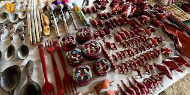
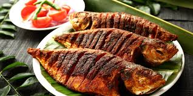
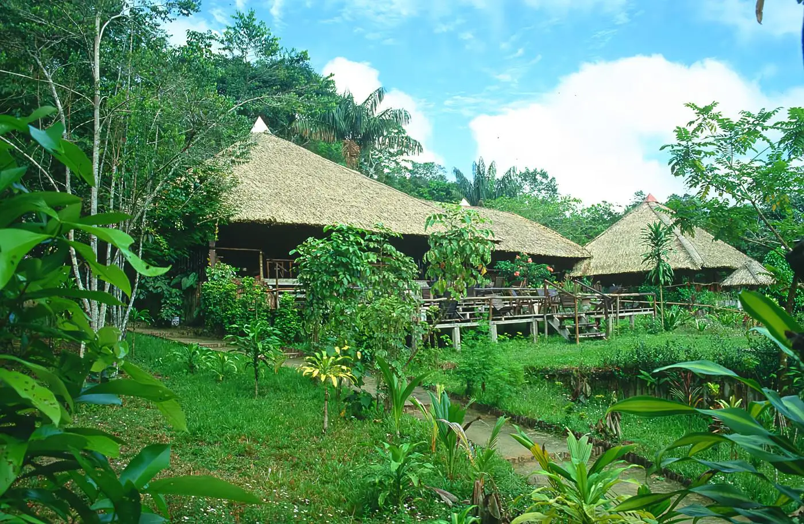
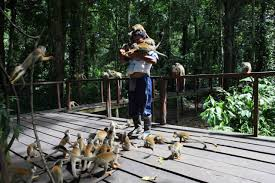
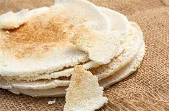
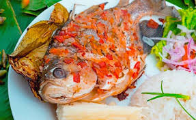
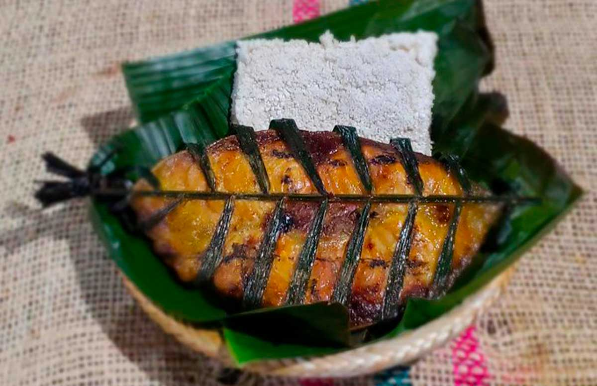

Aquí va la información sobre el departamento de Amazonas.
El Amazonas es el departamento más grande y selvático de Colombia, con capital en Leticia. Se destaca por su gran biodiversidad, el río Amazonas y la presencia de comunidades indígenas que conservan sus tradiciones.
En el Amazonas las tradiciones giran en torno a la selva: danzas y cantos indígenas, medicina ancestral, artesanías, chagras (huertas comunitarias) y la vida alrededor del río Amazonas.

Las artesanías del Amazonas son elaboradas principalmente por comunidades indígenas. Usan fibras naturales, semillas, plumas y madera para crear canastos, mochilas, collares, pulseras y máscaras. Cada pieza refleja su relación con la selva y transmite su cosmovisión y tradiciones ancestrales.
La música y danzas del Amazonas son de origen indígena y tienen un fuerte sentido espiritual. Se acompañan con tambores, flautas y maracas, y suelen usarse en rituales, celebraciones de cosechas, pesca o caza. Las danzas imitan animales de la selva y expresan la unión de la comunidad con la naturaleza.

La gastronomía del Amazonas se basa en productos de la selva y el río. Destacan platos como el casabe (pan de yuca brava), el pescado moqueado o asado en hojas, el tacacho (masa de plátano con carne), las frutas exóticas como arazá, copoazú y camu camu, además de bebidas tradicionales hechas con yuca, maíz y frutas amazónicas.
| Año | Estimación de población |
|---|---|
| 2024 | 86 318 |
| 2023 | 85 056 |
Reserva de selva con diversidad asombrosa: delfines rosados, jaguares, aves exóticas y más. Incluye caminatas, paseos en bote y alojamientos ecológicos inmersos en la naturaleza.
A unos 30 45 minutos en lancha desde Leticia, es el hogar de cientos de monos fraile (titís) que interactúan con los visitantes. Ideal para fotos y conexión directa con la fauna.
A solo 11 15 kilómetros de Leticia, ofrece actividades como canopy, senderismo nocturno, kayak y alojamiento en cabañas en árboles. Muy popular entre quienes buscan ecoturismo y aventura.

Pueblo pintoresco sin automóviles ubicado en el río Loretoyacu. Llamado el "pesebre natural de Colombia", ofrece tranquilidad, cultura indígena y excursiones para avistar delfines rosados.

ipan delgado hecho con yuca brava.
pescado envuelto en hojas y asado.
pescado ahumado o asado lentamente.
masa de plátano verde con carne o chicharrón.

La economía del Amazonas se basa principalmente en la pesca, la agricultura de subsistencia (yuca, plátano, maíz, frutales amazónicos) y la artesanía indígena. También son importantes el turismo ecológico y cultural, la investigación científica, y en menor medida la extracción de madera y recursos naturales. Su desarrollo económico está muy ligado a la conservación de la selva y al aprovechamiento sostenible de sus recursos.